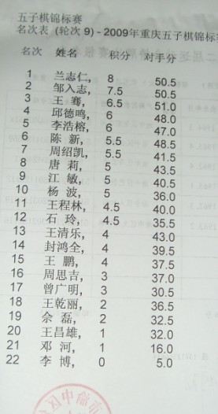

重庆赛最后成绩
首页
五子棋新闻
#1 重庆赛最后成绩 作者：四川连珠魂 发表时间：2009-7-27 17:19:43
 ［ 浪人痴痴 于 2009-7-27 20:29:19 时花20金币送鲜花一朵］
#2 Re:重庆赛最后成绩 作者：黄药师 发表时间：2009-7-27 17:21:07
有论坛里面的人参加吗？
#3 Re:重庆赛最后成绩 作者：堂堂 发表时间：2009-7-27 17:23:02
恭喜
#4 Re:重庆赛最后成绩 作者：团子亲卫队 发表时间：2009-7-27 17:32:03
风尘第六？？
#5 Re:重庆赛最后成绩 作者：浪人痴痴 发表时间：2009-7-27 20:20:07
客客，好强！~
#6 Re:重庆赛最后成绩 作者：花月痕 发表时间：2009-7-28 0:04:53
风多多，太弱了，瓦成灰了－难过语
#7 Re:重庆赛最后成绩 作者：路痴 发表时间：2009-7-28 0:42:45
支持楼上的说法--小白言
#8 Re:重庆赛最后成绩 作者：蛋老师 发表时间：2009-7-28 0:55:19
蛋老师发来贺电
#9 Re:重庆赛最后成绩 作者：蛋老师 发表时间：2009-7-28 0:56:46
魂大师的看形状终于看出一次冠军了,恭喜恭喜
#10 Re:重庆赛最后成绩 作者：潇洒 发表时间：2009-7-28 1:19:29
唐莉是不是会围棋那个？？
#11 Re:重庆赛最后成绩 作者：莲珠秀 发表时间：2009-7-28 8:32:26
祝贺一下四川的美女棋手
#12 Re:重庆赛最后成绩 作者：傀儡 发表时间：2009-7-28 9:57:26
恭喜魂大师~~~
#13 Re:重庆赛最后成绩 作者：忧郁的双眼 发表时间：2009-7-29 12:09:42
敏敏好无敌哦~
#14 Re:重庆赛最后成绩 作者：寅三少 发表时间：2009-7-30 16:53:10
恭喜魂哥哥- 0- 重庆的美女们好热情- 0- 恭喜
#15 Re:重庆赛最后成绩 作者：爱她珍惜她 发表时间：2009-7-30 21:39:14
魂拿第一了啊~！风尘怎么才第6啊？
#16 Re:重庆赛最后成绩 作者：流星小熊猫 发表时间：2009-8-12 20:38:58
熊猫老师发来迟到的贺电
成都哪有美女去了 只去了三个帅哥好伐?
风尘太瓦 大势已去 再发贺电一枚
#17 Re:Re:重庆赛最后成绩 作者：南姑钉子户 发表时间：2009-8-13 2:26:47
引用：
原文由 流星小熊猫 发表于 2009-8-12 20:38:58 :
熊猫老师发来迟到的贺电
成都哪有美女去了 只去了三个帅哥好伐?
风尘太瓦 大势已去 再发贺电一枚
你是来挖坟的哇
#18 Re:重庆赛最后成绩 作者：纳米 发表时间：2009-8-13 9:54:49
I天下g水星是哪一个？
#19 Re:Re:Re:重庆赛最后成绩 作者：浩瀚铭剑 发表时间：2009-12-17 21:29:43
引用：
原文由 南姑钉子户 发表于 2009-8-13 2:26:47 :
引用：
原文由 流星小熊猫 发表于 2009-8-12 20:38:58 :
熊猫老师发来迟到的贺电
成都哪有美女去了 只去了三个帅哥好伐?
风尘太瓦 大势已去 再发贺电一枚
你是来挖坟的哇
钉子说得经典
#20 Re:重庆赛最后成绩 作者：舍露里 发表时间：2009-12-18 9:09:11
熊猫大师怎么不去？
#21 Re:Re:重庆赛最后成绩 作者：浩瀚铭剑 发表时间：2009-12-19 9:20:15
引用：
原文由 舍露里 发表于 2009-12-18 9:09:11 :
熊猫大师怎么不去？
熊猫大师说去了怕把人家饭碗抢了